Diagrams¶
Fifteen diagrams rendered from Mermaid source. Source .mmd files are in diagrams/ (gitignored); rendered SVGs are committed to docs/images/.
To re-render a single diagram:
To re-render all:
for f in diagrams/*.mmd; do mmdc -i "$f" -o "docs/images/$(basename $f .mmd).svg" -p ~/.config/mermaid/puppeteer.json --quiet; done
1. EOH → TEH Pipeline¶
Physical reality generates entropy obligations. Machines and humans split the fulfillment. Registration gates how much human labor enters the collective ledger. TEH is created only from what is registered.
2. The Four EOH Domains¶
What each domain measures, what drives its magnitude, and its behavior at the extremes.
3. Price Mechanism — EOH vs. Classical Supply & Demand¶
4. Basket Price Falls with Automation¶
basket_price(ε) — TEH cost of the sufficiency basket. Goods (60%) decline steeply; services (40%) decline more slowly (care/knowledge resist automation). Both fall, so the floor's purchasing power rises automatically.
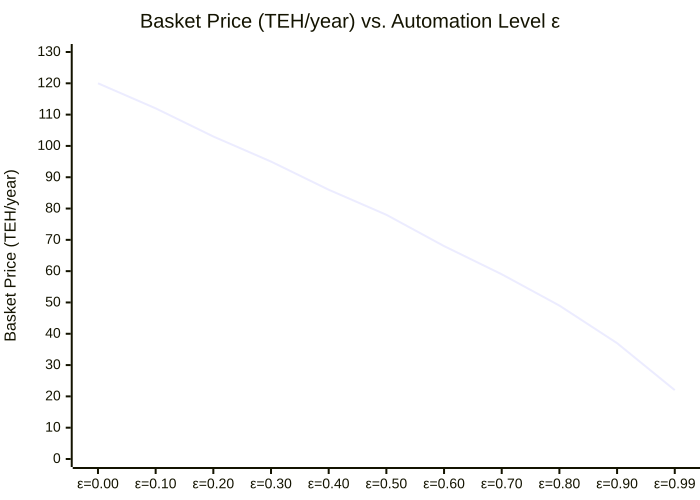
5. Floor Purchasing Power Rises with Automation (Principle 5)¶
Same nominal floor in TEH. Basket price falls. Baskets afforded rises — automatically, with no policy intervention required. Index: 100 = purchasing power at ε=0.
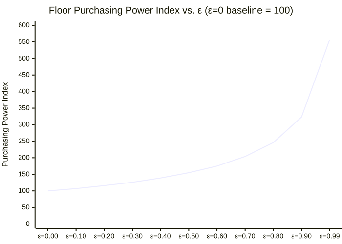
6. Good Price Falls with Automation¶
teh_price(0.1h_base_labor, ε) — price of a good requiring 0.1 hours of human labor at ε=0. Human labor content = (1 − ε) × base_hours. Floor at 5% prevents price reaching zero.
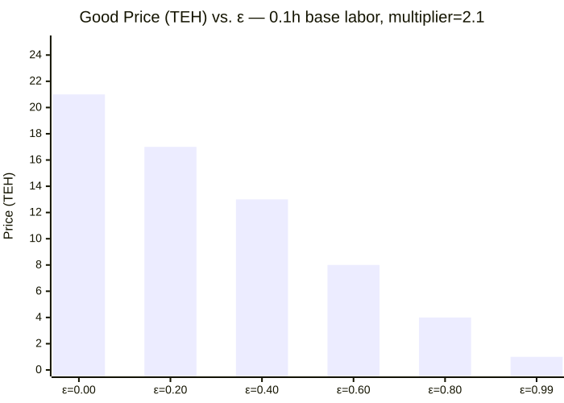
7. Demand Layer Stack¶
Three distinct demand zones in the EOH framework. Classical S/D conflates all three.
8. Scarcity Signal — domain_scarcity_multiplier()¶
The only S/D-like mechanism. Activates only when EOH demand exceeds fulfillment capacity. Corrective, not foundational. Resets once labor is redirected.
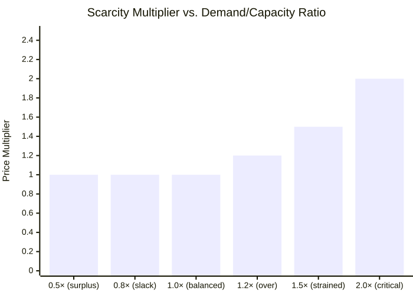
9. TEH Lifecycle — Creation and Destruction¶
TEH is created when registered human labor enters the ledger. Six destruction mechanisms close the circuit. Levies and Trust spending are circulatory (TEH moves, not destroyed).
10. Automation Arc — What Changes with ε¶
11. GUF Master Equation — Component Assembly¶
How the 8 components of the master equation combine into GUF(p), followed by the review-cycle cap and income-linked subsidy adjustments.
12. GUF Location Value Index — L(p) Weights¶
The four sub-indices and their default weights (35 / 30 / 20 / 15) flowing into L(p).
13. GUF Epsilon Arc — Ψ(ε)¶
Bell-curve shape of the global GUF multiplier: near-floor at ε=0 and ε=0.99, peak ≈1.06 at ε=0.40.
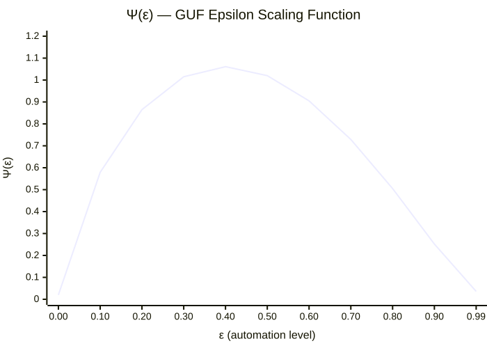
14. GUF Trust Flow — Revenue to Allocation¶
How parcel GUF payments aggregate into guf_trust_inflow(), feed into trust_management() alongside levy revenue, and distribute to ecological, stewardship, sufficiency, and capital channels.
15. GUF Ecological Write-Down Pathways¶
EOH accumulation warning (30% threshold) → write-down declaration → restoration pathway vs. abandonment pathway with 50-year rebuilding surcharge.
